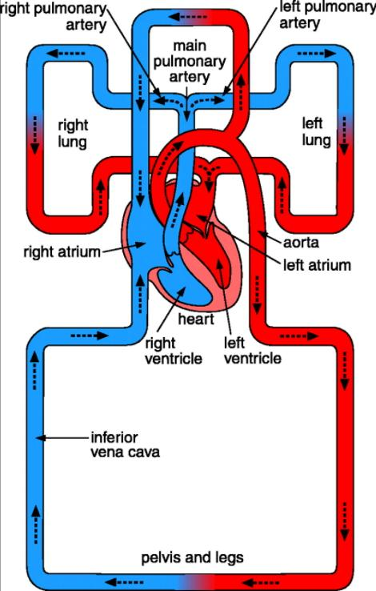
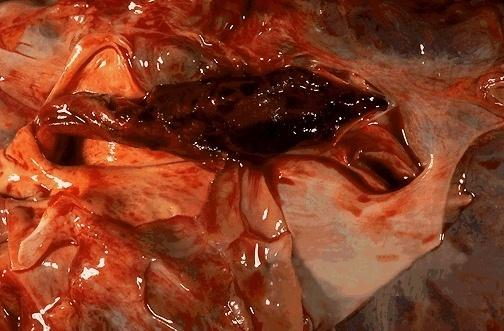
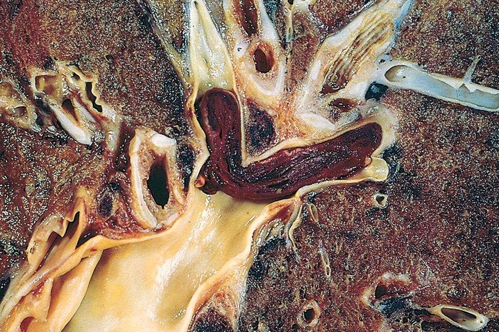
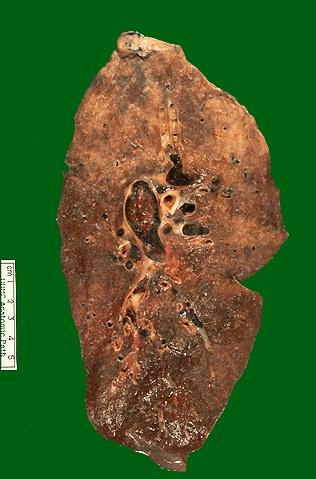
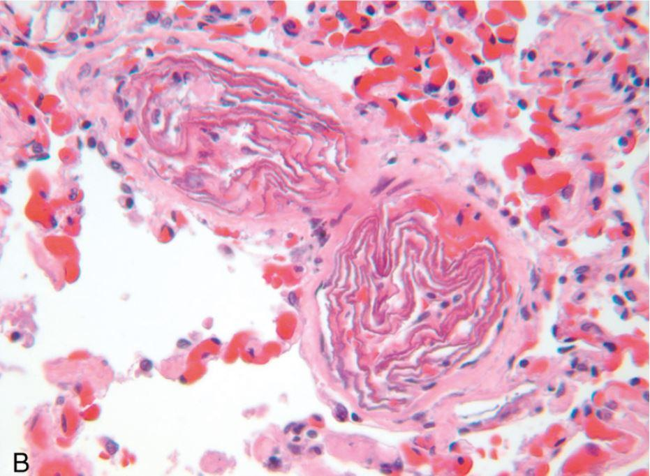

A thrombus is dangerous where it forms. An embolus is dangerous somewhere else entirely — and that displacement is the whole point. Ninety-nine percent of emboli are dislodged thrombi, but the remaining one percent (fat, air, nitrogen, amniotic fluid, tumour, cholesterol, marrow) produce some of the most distinctive syndromes in pathology.ترومبوس در جایی که تشکیل میشود خطرناک است. آمبولوس در جایی کاملاً متفاوت خطرناک است — و همین جابهجایی، اصلِ مطلب است. نود و نه درصد آمبولیها ترومبوسهای جداشدهاند، اما همان یک درصد باقیمانده (چربی، هوا، نیتروژن، مایع آمنیوتیک، تومور، کلسترول، مغز استخوان) برخی از متمایزترین سندرمهای پاتولوژی را میسازند.
By the end of this Part you should be able toدر پایان این بخش باید بتوانید
Trace an embolus from any starting point to its destination, including paradoxical and retrograde routes.مسیر یک آمبولوس را از هر نقطهٔ شروع تا مقصد دنبال کنید، از جمله مسیرهای پارادوکسیکال و رتروگراد.
Explain the three mechanisms by which a large pulmonary embolus kills.سه سازوکاری را که آمبولی بزرگ ریوی از طریق آنها میکُشد توضیح دهید.
Compare thromboembolism, fat, gas and amniotic fluid embolism on setting, latent period, morphology and outcome.ترومبوآمبولی و آمبولی چربی، گازی و مایع آمنیوتیک را از نظر زمینه، دورهٔ نهفتگی، مورفولوژی و پیامد مقایسه کنید.
4.1Definition and the Four Routes of Travelتعریف و چهار مسیر حرکت
Definitionتعریف
Embolism is the occlusion of part of the cardiovascular system by any detached intravascular mass carried there in the bloodstream from a distant site. The transported mass is an embolus; it may be solid, liquid or gaseous.آمبولی عبارت است از انسداد بخشی از دستگاه قلبی–عروقی توسط هر تودهٔ جداشدهٔ داخلعروقی که از محلی دوردست با جریان خون به آنجا حمل شده است. تودهٔ منتقلشده، آمبولوس نام دارد و میتواند جامد، مایع یا گازی باشد.
99% of emboli are dislodged thrombi — hence the term thromboembolism. Unless a vignette gives you a specific reason to think otherwise (long bone fracture, labour, diving, central line), assume thromboembolism.۹۹ درصد آمبولیها ترومبوسهای جداشدهاند — از اینرو اصطلاح ترومبوآمبولی. مگر آنکه سناریو دلیل مشخصی برای فکر کردن به چیز دیگری بدهد (شکستگی استخوان بلند، زایمان، غواصی، کاتتر ورید مرکزی)، فرض را بر ترومبوآمبولی بگذارید.

Fig 4.1 Routes of embolus transport. An embolus travels with the blood and lodges where the vessel becomes too narrow to let it pass — so its destination is determined entirely by where it started.مسیرهای انتقال آمبولوس. آمبولوس همراه خون حرکت میکند و در جایی گیر میکند که رگ برای عبور آن بیش از حد باریک شود — پس مقصد آن کاملاً با محل شروعش تعیین میگردد.
Table 4.1 Four routes, and how to work out the destinationجدول ۴.۱ — چهار مسیر و نحوهٔ تعیین مقصد
Routeمسیر
Originمبدأ
Destination and reasoningمقصد و استدلال
Venous embolismآمبولی وریدی
Systemic veins — above all the deep veins of the leg; also pelvic and periprostatic plexusesوریدهای سیستمیک — بیش از همه وریدهای عمقی ساق؛ و نیز شبکههای لگنی و اطراف پروستات
The lung. Venous blood returns to the right heart and is then pumped into the pulmonary arteries, whose branches are the first capillary-sized bed it meets.ریه. خون وریدی به قلب راست بازمیگردد و سپس به شریانهای ریوی پمپ میشود که انشعاباتشان نخستین بستر با اندازهٔ مویرگیاند که آمبولوس با آن روبهرو میگردد.
Left heart — mural thrombus of the left ventricle or atrium, valve vegetations; also aortic aneurysm and ulcerated aortic plaqueقلب چپ — ترومبوس جداری بطن یا دهلیز چپ، وژتاسیونهای دریچهای؛ و نیز آنوریسم آئورت و پلاک زخمیشدهٔ آئورت
Lower limbs (75%), brain (10%), then intestine, kidney and spleen. The embolus follows the systemic arterial tree and lodges wherever the calibre falls below its diameter.اندام تحتانی (۷۵٪)، مغز (۱۰٪)، سپس روده، کلیه و طحال. آمبولوس درخت شریانی سیستمیک را دنبال میکند و هرجا قطر رگ از قطر آن کمتر شود گیر میافتد.
Paradoxical embolismآمبولی پارادوکسیکال
A venous thrombus, in a patient with a right-to-left shunt (patent foramen ovale, atrial or ventricular septal defect)یک ترومبوس وریدی در بیماری با شانت راست به چپ (سوراخ بیضی باز، نقص دیوارهٔ دهلیزی یا بطنی)
The systemic circulation. The embolus crosses from the right to the left heart through the defect, bypassing the pulmonary filter. Suspect it when a young patient has a stroke and a DVT.گردش خون سیستمیک. آمبولوس از طریق نقص، از قلب راست به چپ عبور کرده و از فیلتر ریوی میگذرد. وقتی بیمار جوانی همزمان سکتهٔ مغزی و ترومبوز ورید عمقی دارد به آن شک کنید.
Retrograde embolismآمبولی رتروگراد
A thrombus in a large vein, e.g. the IVCترومبوسی در ورید بزرگ، مثلاً ورید اجوف تحتانی
Against the direction of flow, when a sudden rise in intrathoracic or intra-abdominal pressure (coughing, straining, sneezing) transiently reverses flow. Explains, for example, vertebral metastasis from pelvic tumours via Batson's plexus.خلاف جهت جریان، وقتی افزایش ناگهانی فشار داخل قفسهٔ سینه یا شکم (سرفه، زور زدن، عطسه) بهطور گذرا جریان را برمیگرداند. برای مثال متاستاز مهرهای از تومورهای لگنی از طریق شبکهٔ باتسون را توضیح میدهد.
High-Yield — the one rule that answers most embolism questionsنکتهٔ کلیدی — قاعدهای که به بیشتر سؤالات آمبولی پاسخ میدهد
Follow the blood. Ask where the embolus started, then trace the circulation forwards until the vessel becomes narrower than the embolus. Veins → right heart → lung. Left heart or aorta → systemic organs. If a venous-origin embolus reaches a systemic organ, there must be a shunt — that is a paradoxical embolus by definition.خون را دنبال کنید. بپرسید آمبولوس از کجا شروع شده، سپس گردش خون را به جلو دنبال کنید تا جایی که رگ از آمبولوس باریکتر شود. ورید ← قلب راست ← ریه. قلب چپ یا آئورت ← اعضای سیستمیک. اگر آمبولوسی با منشأ وریدی به عضوی سیستمیک برسد، حتماً شانتی وجود دارد — و این طبق تعریف، آمبولی پارادوکسیکال است.
4.2Pulmonary Thromboembolismترومبوآمبولی ریوی
Fig 4.2 The pulmonary embolism pathway: thrombus in a deep leg vein detaches, travels through the IVC and right heart, and lodges in the pulmonary arterial tree, blocking flow and impairing oxygenation.مسیر آمبولی ریه: ترومبوس ورید عمقی ساق جدا شده، از ورید اجوف تحتانی و قلب راست عبور کرده و در درخت شریانی ریه گیر میکند، جریان را مسدود و اکسیژنرسانی را مختل میسازد.
Over 95% of pulmonary emboli originate in the deep veins of the lower limb, most often the popliteal, femoral and iliac veins. Note that calf vein thrombi are common but rarely embolise dangerously; it is proximal propagation above the knee that creates a clinically significant embolic risk. This is why ultrasound surveillance concentrates on the proximal veins.بیش از ۹۵ درصد آمبولیهای ریوی از وریدهای عمقی اندام تحتانی منشأ میگیرند، اغلب وریدهای پوپلیتهآل، فمورال و ایلیاک. توجه کنید که ترومبوز وریدهای ساق شایع است اما بهندرت آمبولی خطرناک میدهد؛ این گسترش پروگزیمال به بالای زانو است که خطر آمبولی بالینی مهم ایجاد میکند. به همین دلیل پایش با سونوگرافی بر وریدهای پروگزیمال متمرکز است.
Outcome depends on the size of the embolusپیامد به اندازهٔ آمبولوس بستگی دارد
Large ("saddle") embolus — sudden deathآمبولوس بزرگ («زینی») — مرگ ناگهانی
Fig 4.3 Large saddle embolus from a femoral vein lying astride the bifurcation of the main pulmonary artery into left and right branches. It has retained the shape of the vein in which it formed.آمبولوس زینی بزرگ از ورید فمورال که روی دوشاخهشدن تنهٔ اصلی شریان ریوی به شاخههای چپ و راست نشسته است. شکل ورید محل تشکیل خود را حفظ کرده است.

Fig 4.4 The pulmonary trunk and both main arteries opened at autopsy to reveal the saddle thromboembolus. An embolus of this size is almost always immediately fatal.تنهٔ ریوی و هر دو شریان اصلی که در کالبدشکافی باز شدهاند تا ترومبوآمبولوس زینی را نشان دهند. آمبولوسی به این اندازه تقریباً همیشه بلافاصله کشنده است.
Mechanism — the three ways a massive PE killsمکانیسم — سه راهی که آمبولی گستردهٔ ریه از طریق آنها میکُشد
Mechanical obstruction of pulmonary outflow. Occlusion of the main trunk or of >60% of the pulmonary vascular bed abruptly prevents blood reaching the left heart. Left ventricular preload collapses, cardiac output falls, and the patient becomes profoundly hypotensive.The left ventricle can only pump what it receives. A completely obstructed pulmonary circuit means zero left-sided filling, which is electromechanical dissociation — the heart beats but ejects nothing.انسداد مکانیکی خروجی ریوی. انسداد تنهٔ اصلی یا بیش از ۶۰ درصد بستر عروقی ریه، بهطور ناگهانی مانع رسیدن خون به قلب چپ میشود. پیشبار بطن چپ فرو میریزد، برونده قلبی میافتد و بیمار بهشدت افت فشار پیدا میکند.بطن چپ فقط آنچه را دریافت کند میتواند پمپ کند. انسداد کامل مدار ریوی یعنی پرشدن صفر در سمت چپ — یعنی تفکیک الکترومکانیکی: قلب میزند اما چیزی بیرون نمیراند.
Acute right heart strain — acute cor pulmonale. Pulmonary vascular resistance rises abruptly, and the thin-walled right ventricle must suddenly generate far higher pressure.The right ventricle is built for a low-pressure circuit; it has no time to hypertrophy. It dilates acutely, its wall tension and oxygen demand rise while its coronary perfusion pressure falls, and it fails. The dilated RV also bows the interventricular septum leftwards, further impairing LV filling.فشار حاد بر قلب راست — کور پولمونال حاد. مقاومت عروقی ریه ناگهان بالا میرود و بطن راست نازکدیواره باید بهناگهان فشار بسیار بیشتری تولید کند.بطن راست برای مداری کمفشار ساخته شده و زمانی برای هیپرتروفی ندارد. بهصورت حاد متسع میشود، کشش دیواره و نیاز اکسیژن آن بالا میرود در حالی که فشار پرفیوژن کرونریاش میافتد، و نارسا میگردد. بطن راست متسع، دیوارهٔ بینبطنی را هم به چپ خم میکند و پرشدن بطن چپ را بیشتر مختل میسازد.
Reflex vascular and bronchial spasm. Serotonin, thromboxane and other mediators released from platelets within the embolus cause pulmonary arterial vasoconstriction and bronchoconstriction.This amplifies the mechanical obstruction chemically. It explains why an embolus that occludes only a fraction of the bed can still cause severe haemodynamic compromise, and why hypoxaemia is often worse than the degree of occlusion predicts.اسپاسم رفلکسی عروقی و برونشی. سروتونین، ترومبوکسان و سایر میانجیهای آزادشده از پلاکتهای درون آمبولوس، انقباض شریان ریوی و برونکواسپاسم ایجاد میکنند.این، انسداد مکانیکی را بهصورت شیمیایی تقویت میکند. توضیح میدهد چرا آمبولوسی که فقط بخشی از بستر را مسدود کرده میتواند اختلال همودینامیک شدید ایجاد کند و چرا هیپوکسمی اغلب شدیدتر از آن است که میزان انسداد پیشبینی میکند.
Sudden death, right heart failure, or cardiovascular collapse. Roughly two-thirds of fatal pulmonary emboli kill within the first hour.مرگ ناگهانی، نارسایی قلب راست، یا کلاپس قلبی–عروقی. تقریباً دو سوم آمبولیهای کشندهٔ ریه ظرف ساعت اول میکشند.
Small emboliآمبولوسهای کوچک
Most pulmonary emboli are small and clinically silent: they occlude a peripheral branch, and the lung's dual blood supply — pulmonary artery plus bronchial artery — keeps the parenchyma alive while the embolus is lysed and organized. Such emboli are often found incidentally at autopsy.بیشتر آمبولیهای ریوی کوچک و بدون علامت بالینیاند: یک شاخهٔ محیطی را مسدود میکنند و خونرسانی دوگانهٔ ریه — شریان ریوی بهعلاوهٔ شریان برونشیال — پارانشیم را زنده نگه میدارد تا آمبولوس لیز و سازماندهی شود. چنین آمبولیهایی اغلب بهطور اتفاقی در کالبدشکافی یافت میشوند.
But if the bronchial circulation is already inadequate — as in a patient with chronic passive congestion of the lung from left heart failure — the same small embolus produces pulmonary haemorrhage or a red (haemorrhagic) infarct. This is the direct link back to §1.5 and forward to §5.3, and it is a favourite examination connection.اما اگر گردش خون برونشیال از پیش ناکافی باشد — مانند بیمار مبتلا به احتقان مزمن غیرفعال ریه ناشی از نارسایی قلب چپ — همان آمبولوس کوچک خونریزی ریوی یا انفارکت قرمز (هموراژیک) ایجاد میکند. این پیوند مستقیم با بخش ۱.۵ و بخش ۵.۳ است و ارتباط محبوبی در امتحانات.
Recurrent small emboli over months to years progressively obliterate the pulmonary vascular bed, producing chronic thromboembolic pulmonary hypertension, right ventricular hypertrophy and chronic cor pulmonale.آمبولیهای کوچک مکرر طی ماهها تا سالها بهتدریج بستر عروقی ریه را از بین میبرند و پرفشاری ریوی ترومبوآمبولیک مزمن، هیپرتروفی بطن راست و کور پولمونال مزمن ایجاد میکنند.

Fig 4.5 Thromboemboli within opened pulmonary arteries. Note the coiled, cast-like shape — they retain the form of the leg vein in which they formed.ترومبوآمبولوسها درون شریانهای ریوی باز شده. به شکل پیچخورده و قالبمانند آنها توجه کنید — فرم ورید ساقی که در آن تشکیل شدهاند را حفظ کردهاند.

Fig 4.6 Sectioned lung with thromboemboli filling branch pulmonary arteries.ریهٔ برشخورده با ترومبوآمبولوسهایی که شاخههای شریان ریوی را پر کردهاند.Fig 4.7 Histology of an organizing thromboembolus within a pulmonary artery — fibrin and cellular debris being invaded by granulation tissue.هیستولوژی ترومبوآمبولوس در حال سازمانیابی درون شریان ریوی — فیبرین و بقایای سلولی که بافت گرانولاسیون به آنها نفوذ کرده است.
Clinical Correlation — recognising and preventing PEارتباط بالینی — تشخیص و پیشگیری از آمبولی ریه
Presentation: sudden dyspnoea, pleuritic chest pain, tachypnoea, tachycardia, and — if infarction has occurred — haemoptysis and a pleural rub. Hypotension and raised JVP indicate a massive embolus. The ECG classically (but uncommonly) shows S1Q3T3; sinus tachycardia is far more frequent. D-dimer is sensitive but not specific — useful to exclude PE in a low-probability patient. CT pulmonary angiography is the diagnostic standard. Prevention is the real lesson. Because most PEs arise from leg DVT, and most DVTs arise from stasis during immobility, prophylaxis — early mobilisation, graduated compression stockings, intermittent pneumatic compression and low-molecular-weight heparin in at-risk inpatients — prevents far more deaths than treatment cures.تظاهر: تنگی نفس ناگهانی، درد پلورتیک قفسهٔ سینه، تاکیپنه، تاکیکاردی و — در صورت بروز انفارکتوس — هموپتزی و صدای مالش پلور. افت فشار و افزایش فشار ورید ژوگولار نشاندهندهٔ آمبولی گسترده است. نوار قلب بهطور کلاسیک (اما نه شایع) الگوی S1Q3T3 نشان میدهد؛ تاکیکاردی سینوسی بسیار شایعتر است. D-dimer حساس اما غیراختصاصی است — برای رد کردن آمبولی در بیمار کماحتمال مفید است. سیتی آنژیوگرافی ریه استاندارد تشخیصی است. درس اصلی، پیشگیری است. چون بیشتر آمبولیهای ریه از ترومبوز ورید عمقی ساق و بیشتر این ترومبوزها از رکود ناشی از بیحرکتی منشأ میگیرند، پیشگیری — تحرک زودهنگام، جوراب فشاری مدرج، فشار پنوماتیک متناوب و هپارین با وزن مولکولی کم در بیماران بستری پرخطر — مرگهای بسیار بیشتری را نسبت به درمان، جلوگیری میکند.
Origin: about 80% arise from intracardiac mural thrombi — two-thirds of these from left ventricular wall thrombus after myocardial infarction, and about a quarter from a dilated left atrium in atrial fibrillation. The remainder come from valvular vegetations, aortic aneurysms, ulcerated atherosclerotic plaques, and paradoxical emboli. In perhaps a third of cases no source is ever identified.مبدأ: حدود ۸۰ درصد از ترومبوسهای جداری داخل قلبی منشأ میگیرند — دو سوم از ترومبوس دیوارهٔ بطن چپ پس از انفارکتوس میوکارد و حدود یک چهارم از دهلیز چپ متسع در فیبریلاسیون دهلیزی. باقی از وژتاسیونهای دریچهای، آنوریسم آئورت، پلاکهای آترواسکلروتیک زخمیشده و آمبولیهای پارادوکسیکال میآیند. شاید در یک سوم موارد هیچ منبعی شناسایی نمیشود.
Destinations, in order of frequency:lower limbs (~75%), brain (~10%), then intestine, kidney and spleen.مقاصد، بهترتیب فراوانی:اندام تحتانی (حدود ۷۵٪)، مغز (حدود ۱۰٪)، سپس روده، کلیه و طحال.
Unlike pulmonary emboli, which lodge in a tissue with a dual blood supply, systemic emboli usually lodge in organs supplied by end arteries. The consequence is therefore infarction far more often than not — and this is the direct link into Part 5.برخلاف آمبولیهای ریوی که در بافتی با خونرسانی دوگانه گیر میکنند، آمبولیهای سیستمیک معمولاً در اعضایی جا میگیرند که با شریانهای انتهایی تغذیه میشوند. بنابراین پیامد، اغلب انفارکتوس است — و این پیوند مستقیم با بخش ۵ است.
4.4Fat and Marrow Embolismآمبولی چربی و مغز استخوان
Fig 4.8 Fat embolism in the lung, Sudan stain on a frozen section — fat globules stain orange-red within alveolar capillaries. Routine processing dissolves fat in xylene, so it is invisible on a standard H&E paraffin section and appears only as empty, clear vacuoles.آمبولی چربی در ریه، رنگآمیزی سودان روی مقطع منجمد — گویچههای چربی درون مویرگهای آلوئولی نارنجی–قرمز رنگ میگیرند. پردازش معمولی چربی را در زایلن حل میکند، پس در مقطع پارافینی استاندارد H&E دیده نمیشود و فقط بهصورت واکوئلهای خالی و شفاف ظاهر میگردد.
Setting: fractures of the shafts of long bones (femur, tibia) — which have fatty marrow — and also soft tissue trauma, burns, orthopaedic procedures and liposuction. Fat and marrow enter the circulation through torn marrow sinusoids or ruptured adipose venules.زمینه: شکستگی تنهٔ استخوانهای بلند (ران، درشتنی) که مغز استخوان چرب دارند — و نیز ترومای بافت نرم، سوختگی، اعمال ارتوپدی و لیپوساکشن. چربی و مغز استخوان از طریق سینوزوئیدهای پارهشدهٔ مغز استخوان یا وریدچههای چربی آسیبدیده وارد گردش خون میشوند.
Crucially, fat embolism is common but fat embolism syndrome is rare. Fat globules can be found in the pulmonary circulation of up to 90% of patients with severe skeletal injury, yet fewer than 10% develop the clinical syndrome. The difference lies in the second, biochemical mechanism below.نکتهٔ مهم: آمبولی چربی شایع است اما سندرم آمبولی چربی نادر. گویچههای چربی را میتوان در گردش خون ریوی تا ۹۰ درصد بیماران با آسیب شدید اسکلتی یافت، اما کمتر از ۱۰ درصد سندرم بالینی را نشان میدهند. تفاوت در مکانیسم دوم و بیوشیمیایی زیر نهفته است.
Mechanism — the two-hit pathogenesis of fat embolism syndromeمکانیسم — پاتوژنز دو ضربهای سندرم آمبولی چربی
Hit 1 — mechanical. Fat globules and marrow fragments released from the fracture enter torn venules and travel to the lung, physically obstructing pulmonary capillaries.Marrow sinusoids are thin-walled and held open by the surrounding bone, so they cannot collapse; a fracture opens them directly into the venous circulation, and the intramedullary pressure generated by the injury forces marrow contents in.ضربهٔ اول — مکانیکی. گویچههای چربی و قطعات مغز استخوان آزادشده از محل شکستگی وارد وریدچههای پاره شده و به ریه میروند و مویرگهای ریوی را بهطور فیزیکی مسدود میکنند.سینوزوئیدهای مغز استخوان نازکدیوارهاند و توسط استخوان اطراف باز نگه داشته میشوند، پس نمیتوانند فرو بریزند؛ شکستگی آنها را مستقیماً به گردش وریدی باز میکند و فشار داخل مجرای استخوانِ ناشی از آسیب، محتویات مغز استخوان را به داخل میراند.
Hit 2 — biochemical. Over 24–72 hours, lipases hydrolyse the neutral fat into free fatty acids, which are directly toxic to endothelium and pneumocytes, and platelets aggregate on the globule surfaces.This is why there is a latent period. The mechanical obstruction alone is usually tolerable; the delayed chemical injury is what produces the syndrome. Free fatty acids damage the alveolar–capillary membrane in exactly the way that causes ARDS.ضربهٔ دوم — بیوشیمیایی. طی ۲۴ تا ۷۲ ساعت، لیپازها چربی خنثی را به اسیدهای چرب آزاد هیدرولیز میکنند که مستقیماً برای اندوتلیوم و پنوموسیتها سمیاند، و پلاکتها روی سطح گویچهها تجمع مییابند.به همین دلیل یک دورهٔ نهفتگی وجود دارد. انسداد مکانیکی بهتنهایی معمولاً قابلتحمل است؛ آسیب شیمیایی تأخیری است که سندرم را ایجاد میکند. اسیدهای چرب آزاد غشای آلوئولی–مویرگی را دقیقاً بههمانشکلی آسیب میزنند که سندرم دیسترس تنفسی حاد ایجاد میشود.
Endothelial injury and platelet consumption produce diffuse alveolar damage, pulmonary edema, haemorrhage, atelectasis and thrombocytopenia.Platelets adhere to fat globules and are consumed — hence the petechial rash and the falling platelet count.آسیب اندوتلیال و مصرف پلاکت، آسیب منتشر آلوئولی، ادم ریوی، خونریزی، آتلکتازی و ترومبوسیتوپنی ایجاد میکنند.پلاکتها به گویچههای چربی میچسبند و مصرف میشوند — از اینرو بثورات پتشیال و کاهش شمارش پلاکت.
Small globules deform and pass through the pulmonary capillary bed into the systemic circulation, reaching brain, kidney and skin.Unlike a rigid thrombus, a fat droplet is deformable and can squeeze through a capillary. This is why fat embolism causes cerebral signs without a shunt — a key distinction from thromboembolism.گویچههای کوچک تغییر شکل داده و از بستر مویرگی ریه به گردش سیستمیک میروند و به مغز، کلیه و پوست میرسند.برخلاف ترومبوس صلب، قطرهٔ چربی تغییرشکلپذیر است و میتواند از مویرگ بگذرد. به همین دلیل آمبولی چربی بدون شانت علائم مغزی ایجاد میکند — تمایزی کلیدی از ترومبوآمبولی.
The classic triad, 24–72 h after a long-bone fracture: ① respiratory distress (dyspnoea, tachypnoea, hypoxaemia), ② neurological abnormality (irritability, confusion, progressing to delirium or coma), ③ a petechial rash — characteristically over the upper anterior chest, axillae, neck and conjunctivae, and a valuable clue because it appears in no other embolic syndrome. Plus thrombocytopenia and anaemia. Mortality is around 10%. The older lecture terminology for the disseminated form is "lung–brain–kidney–skin embolism syndrome".سهگانهٔ کلاسیک، ۲۴ تا ۷۲ ساعت پس از شکستگی استخوان بلند: ① دیسترس تنفسی (تنگی نفس، تاکیپنه، هیپوکسمی)، ② اختلال عصبی (بیقراری، گیجی، پیشرفت به دلیریوم یا کما)، ③ بثورات پتشیال — بهطور مشخص روی قفسهٔ سینهٔ قدامی فوقانی، زیربغل، گردن و ملتحمه، که سرنخ ارزشمندی است چون در هیچ سندرم آمبولیک دیگری دیده نمیشود. بهعلاوهٔ ترومبوسیتوپنی و کمخونی. مرگومیر حدود ۱۰ درصد است. اصطلاح قدیمیتر درس برای شکل منتشر آن، «سندرم آمبولی ریه–مغز–کلیه–پوست» است.
Quantitatively, the lecture notes that 9–20 g of fat entering the pulmonary circulation may occlude up to 75% of the pulmonary arteries, producing pulmonary edema, haemorrhage, atelectasis, asphyxia and right heart failure.از نظر کمّی، درس اشاره میکند که ورود ۹ تا ۲۰ گرم چربی به گردش خون ریوی میتواند تا ۷۵ درصد شریانهای ریوی را مسدود کند و ادم ریوی، خونریزی، آتلکتازی، خفگی و نارسایی قلب راست ایجاد نماید.
Fig 4.9 Fat emboli within a pulmonary arteriole appearing as clear, rounded, empty vacuoles on routine H&E — the fat itself has been dissolved out during processing.آمبولیهای چربی درون شریانچهٔ ریوی که در رنگآمیزی معمول H&E بهصورت واکوئلهای شفاف، گرد و خالی دیده میشوند — خودِ چربی در حین پردازش حل شده است.
4.5Gas Embolism and Decompression Sicknessآمبولی گازی و بیماری کاهش فشار
Air embolismآمبولی هوا
How air gets in: chest trauma; cardiothoracic, neurosurgical (especially sitting-position operations) and obstetric procedures; insertion, use or removal of a central venous catheter; haemodialysis; laparoscopic insufflation; and rupture of uterine or vaginal veins during delivery or criminal abortion.هوا چگونه وارد میشود: ترومای قفسهٔ سینه؛ اعمال قلبی–قفسهٔ سینه، جراحی مغز و اعصاب (بهویژه در وضعیت نشسته) و اعمال مامایی؛ گذاشتن، استفاده یا خارجکردن کاتتر ورید مرکزی؛ همودیالیز؛ دمیدن گاز در لاپاروسکوپی؛ و پارگی وریدهای رحمی یا واژینال حین زایمان یا سقط غیرقانونی.
Mechanism — why gas is more dangerous than an equivalent volume of solidمکانیسم — چرا گاز از حجم معادل جامد خطرناکتر است
Air enters a vein where local venous pressure is below atmospheric — most importantly in neck and thoracic veins during inspiration.Inspiration generates negative intrathoracic pressure, which sucks air in through any open venous channel. This is why a patient having a central line removed is asked to hold their breath or lie head-down.هوا از وریدی وارد میشود که فشار وریدی موضعی آن کمتر از فشار جو است — مهمتر از همه در وریدهای گردنی و قفسهٔ سینه حین دم.دم فشار منفی داخل قفسهٔ سینه ایجاد میکند که هوا را از هر مجرای وریدی باز به داخل میمکد. به همین دلیل از بیماری که کاتتر ورید مرکزیاش خارج میشود خواسته میشود نفسش را نگه دارد یا سر پایین بخوابد.
Bubbles are carried to the right ventricle, where the beating heart churns air with blood into a compressible, frothy foam.This is the critical step. The right ventricle is a pump designed for incompressible fluid. Foam compresses instead of being ejected — the ventricle contracts but nothing leaves. This is called an air lock.حبابها به بطن راست میرسند، جایی که قلب در حال ضربان، هوا را با خون به هم میزند و کف فشردهشدنی ایجاد میکند.این گام حیاتی است. بطن راست پمپی است که برای مایع فشردهنشدنی طراحی شده. کف بهجای بیرون رانده شدن، فشرده میشود — بطن منقبض میگردد اما چیزی خارج نمیشود. به این حالت قفل هوایی میگویند.
Outflow from the right heart ceases; cardiac output collapses.Same end-point as a massive saddle embolus, reached by a different route.خروجی قلب راست متوقف میشود و برونده قلبی فرو میریزد.همان نقطهٔ پایانی آمبولی زینی گسترده، اما از مسیری متفاوت.
Bubbles also mechanically injure endothelium and activate platelets and complement at the blood–gas interface.A gas–liquid interface denatures plasma proteins, which is why gas emboli cause more inflammatory injury than their volume alone suggests.حبابها همچنین بهصورت مکانیکی اندوتلیوم را آسیب زده و پلاکت و کمپلمان را در سطح تماس خون–گاز فعال میکنند.سطح تماس گاز–مایع پروتئینهای پلاسما را دناتوره میکند و به همین دلیل آمبولی گازی آسیب التهابی بیشتری از آنچه حجمش نشان میدهد ایجاد مینماید.
Volume thresholds: small volumes are absorbed harmlessly; >100 mL causes acute distress; >300 mL entering rapidly is generally fatal. Management: place the patient in the left lateral decubitus, head-down (Durant) position so that air is trapped at the apex of the right ventricle away from the outflow tract, give 100% oxygen, and aspirate air from a central line if one is in place.آستانههای حجمی: حجمهای کم بدون آسیب جذب میشوند؛ بیش از ۱۰۰ میلیلیتر دیسترس حاد ایجاد میکند؛ ورود سریع بیش از ۳۰۰ میلیلیتر معمولاً کشنده است. اقدام درمانی: بیمار را در وضعیت خوابیده به پهلوی چپ با سر پایین (وضعیت دورانت) قرار دهید تا هوا در نوک بطن راست و دور از مسیر خروجی گیر بیفتد، اکسیژن ۱۰۰ درصد بدهید، و در صورت وجود کاتتر ورید مرکزی، هوا را آسپیره کنید.
Decompression sickness (caisson disease)بیماری کاهش فشار (بیماری کیسون)
Who:deep-sea divers and underwater construction workers ascending too rapidly from high ambient pressure to normal; and aviators or high-altitude pilots ascending from normal to low pressure.چه کسانی:غواصان اعماق و کارگران سازههای زیرآب که از فشار بالای محیط بهسرعت به فشار طبیعی بازمیگردند؛ و خلبانان یا افرادی که از فشار طبیعی به فشار کم ارتفاع بالا میروند.
Mechanism — why nitrogen, and why only on ascentمکانیسم — چرا نیتروژن، و چرا فقط هنگام صعود
At depth, ambient pressure is high, so by Henry's law far more gas dissolves in blood and tissue than at the surface.The solubility of a gas in a liquid is directly proportional to its partial pressure. At 30 m the ambient pressure is four atmospheres, so four times as much gas dissolves.در عمق، فشار محیط بالاست، پس طبق قانون هنری گاز بسیار بیشتری نسبت به سطح دریا در خون و بافت حل میشود.حلالیت یک گاز در مایع مستقیماً متناسب با فشار جزئی آن است. در عمق ۳۰ متری فشار محیط چهار اتمسفر است، پس چهار برابر گاز حل میشود.
Oxygen and CO2 are metabolised or buffered, but nitrogen is inert and highly fat-soluble, so it simply accumulates — preferentially in adipose tissue, bone marrow, nerve myelin and joint tissues.Nitrogen cannot be consumed by any metabolic pathway, so its only exit is back through the lung. It concentrates in fat because it is about five times more soluble in lipid than in water.اکسیژن و CO2 متابولیزه یا بافر میشوند، اما نیتروژن بیاثر و بسیار محلول در چربی است، پس صرفاً انباشته میگردد — ترجیحاً در بافت چربی، مغز استخوان، میلین اعصاب و بافتهای مفصلی.نیتروژن با هیچ مسیر متابولیکی مصرف نمیشود، پس تنها راه خروجش بازگشت از طریق ریه است. در چربی تجمع مییابد چون حلالیتش در لیپید حدود پنج برابر آب است.
On rapid ascent, ambient pressure falls faster than nitrogen can diffuse back into the lungs, so the dissolved gas comes out of solution as bubbles within blood, tissue fluid and fat.Exactly like opening a carbonated drink. Slow ascent — or a decompression stop — allows nitrogen to be exhaled gradually and no bubbles form. This is why the rate of ascent, not the depth alone, determines the disease.در صعود سریع، فشار محیط تندتر از آن افت میکند که نیتروژن بتواند به ریه بازگردد، پس گاز محلول بهصورت حباب در خون، مایع بافتی و چربی از محلول خارج میشود.دقیقاً مانند باز کردن یک نوشابهٔ گازدار. صعود آهسته — یا توقف کاهش فشار — اجازه میدهد نیتروژن بهتدریج بازدم شود و حبابی تشکیل نگردد. به همین دلیل سرعت صعود، نه صرفاً عمق، تعیینکنندهٔ بیماری است.
Bubbles obstruct capillaries, distend tissues and activate platelets and complement at the gas–blood interface.The same interfacial injury as in air embolism, but generated throughout the body simultaneously rather than at one entry point.حبابها مویرگها را مسدود، بافتها را متسع و پلاکت و کمپلمان را در سطح تماس گاز–خون فعال میکنند.همان آسیب سطح تماس در آمبولی هوا، اما بهطور همزمان در سراسر بدن و نه در یک نقطهٔ ورود.
Acute — "the bends": severe pain in joints and muscles from bubbles in periarticular tissue, forcing the sufferer to bend over. "The chokes": respiratory distress from pulmonary vascular bubbles causing edema, haemorrhage and atelectasis. "The staggers": vertigo and neurological deficits from bubbles in the CNS. Chronic (caisson disease proper): repeated or persistent bubbles cause ischaemic necrosis of bone — avascular necrosis of the femoral head, humeral head and tibia — because these sites have fatty marrow and an end-arterial supply. Treatment is immediate recompression in a hyperbaric chamber followed by slow, controlled decompression, plus 100% oxygen.حاد — «بندز»: درد شدید مفاصل و عضلات ناشی از حباب در بافت اطراف مفصل، که فرد را وادار به خمشدن میکند. «چوکز»: دیسترس تنفسی ناشی از حبابهای عروق ریوی که ادم، خونریزی و آتلکتازی ایجاد میکنند. «استگرز»: سرگیجه و نقص عصبی ناشی از حباب در دستگاه عصبی مرکزی. مزمن (بیماری کیسون بهمعنای دقیق): حبابهای مکرر یا پایدار باعث نکروز ایسکمیک استخوان میشوند — نکروز آواسکولار سر استخوان ران، سر بازو و درشتنی — چون این نواحی مغز استخوان چرب و خونرسانی شریانی انتهایی دارند. درمان، فشردهسازی مجدد فوری در اتاقک هیپرباریک و سپس کاهش فشار آهسته و کنترلشده، بهعلاوهٔ اکسیژن ۱۰۰ درصد است.
4.6Amniotic Fluid Embolismآمبولی مایع آمنیوتیک

Fig 4.10 Amniotic fluid embolism. A pulmonary arteriole contains a mass of fetal squamous cells (squames) — the diagnostic finding. Lanugo hairs, vernix fat and mucin may also be present.آمبولی مایع آمنیوتیک. یک شریانچهٔ ریوی حاوی تودهٔ سلولهای سنگفرشی جنینی (اسکوآم) است — یافتهٔ تشخیصی. موهای لانوگو، چربی ورنیکس و موسین نیز ممکن است دیده شوند.
Rare (about 1 in 40,000 deliveries) but catastrophic, with a mortality approaching 80% and accounting for roughly 10% of maternal deaths in developed countries. Survivors frequently have permanent neurological deficit.نادر (حدود ۱ در ۴۰٬۰۰۰ زایمان) اما فاجعهبار، با مرگومیر نزدیک به ۸۰ درصد که تقریباً ۱۰ درصد مرگهای مادری در کشورهای توسعهیافته را تشکیل میدهد. بازماندگان اغلب نقص عصبی دائمی دارند.
Mechanismمکانیسم
After rupture of the membranes, vigorous uterine contractions force amniotic fluid between the membranes and the uterine wall, up to the placental margin, and into the torn uterine venous sinusoids.Two conditions must coexist: a breach in the fetal membranes (providing access) and a pressure gradient driving fluid into an open maternal vein (provided by contraction against a torn placental bed).پس از پارگی پردهها، انقباضات شدید رحم مایع آمنیوتیک را بین پردهها و دیوارهٔ رحم، تا حاشیهٔ جفت و به داخل سینوزوئیدهای وریدی رحم که پاره شدهاند میراند.دو شرط باید همزمان باشند: شکافی در پردههای جنینی (که دسترسی میدهد) و گرادیان فشاری که مایع را به ورید باز مادری میراند (که با انقباض در برابر بستر پارهشدهٔ جفت فراهم میشود).
Amniotic fluid contents — fetal squames, lanugo hairs, vernix caseosa fat, mucin and meconium — travel to the pulmonary circulation.The uterine veins drain into the systemic venous system, so the lung is the first capillary bed reached.محتویات مایع آمنیوتیک — سلولهای سنگفرشی جنینی، موهای لانوگو، چربی ورنیکس کازئوزا، موسین و مکونیوم — به گردش خون ریوی میروند.وریدهای رحمی به دستگاه وریدی سیستمیک تخلیه میشوند، پس ریه نخستین بستر مویرگی است که به آن میرسند.
These particulates cause mechanical obstruction, but far more importantly they trigger an anaphylactoid reaction to fetal antigens, with massive release of vasoactive and procoagulant mediators.The amount of particulate matter is too small to account for the clinical severity. The dominant injury is immunological — which is why the condition is now often called anaphylactoid syndrome of pregnancy.این ذرات انسداد مکانیکی ایجاد میکنند، اما بهمراتب مهمتر آنکه یک واکنش آنافیلاکتوئید به آنتیژنهای جنینی راه میاندازند، با آزادسازی گستردهٔ میانجیهای وازواکتیو و پروانعقادی.مقدار مادهٔ ذرهای برای توضیح شدت بالینی بسیار کم است. آسیب غالب، ایمونولوژیک است — و به همین دلیل امروزه این وضعیت اغلب سندرم آنافیلاکتوئید بارداری نامیده میشود.
Result: intense pulmonary vasoconstriction, right then left heart failure, non-cardiogenic pulmonary edema (diffuse alveolar damage), and — because amniotic fluid is rich in tissue factor — fulminant DIC.The tissue factor content of amniotic fluid is what converts a cardiorespiratory catastrophe into a haemorrhagic one; the patient collapses and then bleeds uncontrollably from the uterus and every puncture site.نتیجه: انقباض شدید عروق ریوی، نارسایی ابتدا قلب راست و سپس چپ، ادم ریوی غیرقلبی (آسیب منتشر آلوئولی)، و — چون مایع آمنیوتیک سرشار از فاکتور بافتی است — DIC برقآسا.محتوای فاکتور بافتی مایع آمنیوتیک است که یک فاجعهٔ قلبی–تنفسی را به فاجعهای خونریزیدهنده تبدیل میکند؛ بیمار کلاپس کرده و سپس بهطور غیرقابلکنترل از رحم و هر محل سوزن خونریزی مینماید.
Sudden, during or immediately after labour: severe dyspnoea, cyanosis, hypotensive shock, seizures, coma, then profuse haemorrhage from DIC. Autopsy finding (classic and examinable): fetal squamous cells, lanugo hairs, vernix fat and mucin within pulmonary arteries and capillaries.ناگهانی، حین یا بلافاصله پس از زایمان: تنگی نفس شدید، سیانوز، شوک هیپوتانسیو، تشنج، کما، و سپس خونریزی شدید ناشی از DIC. یافتهٔ کالبدشکافی (کلاسیک و قابلطرح در امتحان):سلولهای سنگفرشی، موهای لانوگو، چربی ورنیکس و موسین جنینی درون شریانها و مویرگهای ریوی.
4.7Other Emboliسایر آمبولیها
Tumour embolism — clusters of malignant cells entering the circulation. This is the mechanism of haematogenous metastasis. Renal cell carcinoma and hepatocellular carcinoma characteristically grow as solid tumour thrombus along the renal vein and IVC.آمبولی توموری — دستههای سلول بدخیم که وارد گردش خون میشوند. این سازوکار متاستاز خونی است. کارسینوم سلول کلیوی و کارسینوم هپاتوسلولار بهطور مشخص بهصورت ترومبوس توموری توپر در امتداد ورید کلیوی و ورید اجوف تحتانی رشد میکنند.
Septic embolism — an infected thrombus fragment, typically from infective endocarditis. Produces abscesses at the site of lodgement rather than a bland infarct, and may weaken the arterial wall to form a mycotic aneurysm. See §5.5.آمبولی سپتیک — قطعهای از ترومبوس عفونی، معمولاً از اندوکاردیت عفونی. بهجای انفارکت ساده، در محل گیرکردن آبسه ایجاد میکند و میتواند دیوارهٔ شریان را ضعیف کرده و آنوریسم میکوتیک بسازد. بخش ۵.۵ را ببینید.
Atherosclerotic (cholesterol) embolism — fragments of a ruptured plaque, recognisable microscopically by needle-shaped cholesterol clefts within the occluded vessel. Often follows angiography or vascular surgery; produces blue toe syndrome, livedo reticularis and renal impairment.آمبولی آترواسکلروتیک (کلسترولی) — قطعاتی از پلاک پارهشده که در میکروسکوپ با شکافهای سوزنیشکل کلسترول درون رگ مسدود شناخته میشوند. اغلب پس از آنژیوگرافی یا جراحی عروق رخ میدهد؛ سندرم انگشت آبی، لیوِدو رتیکولاریس و اختلال کلیوی ایجاد میکند.
Bone marrow embolism — intact fragments of haematopoietic marrow with fat, found in pulmonary vessels after fracture or vigorous cardiopulmonary resuscitation. Usually an incidental autopsy finding.آمبولی مغز استخوان — قطعات سالم مغز خونساز همراه با چربی که پس از شکستگی یا احیای قلبی–ریوی شدید در عروق ریوی یافت میشود. معمولاً یافتهای اتفاقی در کالبدشکافی است.
Foreign body embolism — catheter fragments, intravenous drug-user talc or cotton fibres, bullet or shrapnel fragments.آمبولی جسم خارجی — قطعات کاتتر، تالک یا الیاف پنبهٔ مصرفکنندگان تزریقی مواد، قطعات گلوله یا ترکش.
4.8All Embolism Types Comparedمقایسهٔ تمام انواع آمبولی
Table 4.2 Master comparison of embolism typesجدول ۴.۲ — مقایسهٔ جامع انواع آمبولی
Abscess at the lodging site; mycotic aneurysmآبسه در محل گیرکردن؛ آنوریسم میکوتیک
Cholesterol embolismآمبولی کلسترولی
After angiography or vascular surgery; severe atherosclerosisپس از آنژیوگرافی یا جراحی عروق؛ آترواسکلروز شدید
Days after procedureروزها پس از عمل
Blue toe syndrome, livedo reticularis, renal failure, eosinophiliaسندرم انگشت آبی، لیودو رتیکولاریس، نارسایی کلیه، ائوزینوفیلی
Needle-shaped cholesterol clefts in the vesselشکافهای سوزنی کلسترول درون رگ
Summary — Embolism in three sentencesخلاصه — آمبولی در سه جمله
An embolus is any detached solid, liquid or gaseous mass carried by the blood to a site distant from its origin.آمبولوس هر تودهٔ جداشدهٔ جامد، مایع یا گازی است که توسط خون به محلی دور از مبدأ خود حمل میشود.
Pulmonary emboli derive primarily from lower-extremity deep vein thrombosis, and their effect depends on the size of the embolus.آمبولیهای ریوی عمدتاً از ترومبوز وریدهای عمقی اندام تحتانی میآیند و اثرشان به اندازهٔ آمبولوس بستگی دارد.
Systemic emboli derive primarily from cardiac mural or valvular thrombi, aortic aneurysms or atherosclerotic plaque; whether one causes infarction depends on the site of embolisation and the adequacy of the collateral circulation.آمبولیهای سیستمیک عمدتاً از ترومبوسهای جداری یا دریچهای قلب، آنوریسم آئورت یا پلاک آترواسکلروتیک میآیند؛ اینکه آمبولی انفارکتوس ایجاد کند به محل آمبولی و کفایت گردش خون جانبی بستگی دارد.